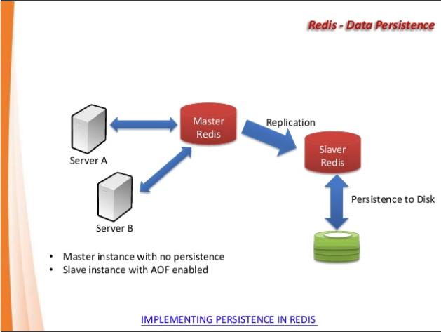
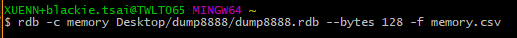
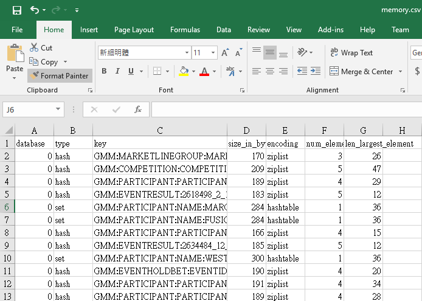

分享如何使用 Redis 的 rdb 檔案進行 Memory 使用分析
在 Redis 的實務使用上，通常很難判斷一個 Key 值在 Redis Instance 裡面的實際占用的記憶體大小。
這邊介紹如何透過 redis-rdb-tools 搭配 Redis 的 .rdb 檔案來做使用量的分析。
What is Redis .rdb file
RDB 是 Redis 預設的持久化方案。在指定的時間間隔內，執行指定次數的寫入操作，則會將內存中的數據內容回寫到硬碟中。此時會在指定目錄下建立一個 dump.rdb 文件。 而當 Redis 重啟時會優先通過載入當前指定的 dump.rdb 檔案恢復數據資料。

What is redis-rdb-tools
redis-rdb-tools 是一個用python 寫好的工具可以幫我們透過分析 .rdb 檔案的方式顯示出當前所有Key值所佔據的實體記憶體大小。它所提供的功能如下:
- 所有數據庫(db) 和 key值生成數據的內存報告
- 將 .rdb 轉換為 JSON 或是 .csv 檔案
- 使用標準 diff 工具比較兩個轉儲文件的差異
安裝上請先確 python 環境安裝正確後，透過以下指令安裝，這邊 官方強力推薦安裝 python-lzf 加速 parsing :
pip install rdbtools python-lzf
接著我們可以透過指令轉換出 CSV 檔案:
rdb -c memory /var/redis/6379/dump.rdb --bytes 128 -f memory.csv

產生的檔案如下:

透過 Excel ，我們可以更有效地查出每個 Key 值實際的記憶體用量。
RDB 的優缺點
優點：
1 適合大規模的數據恢復。
2 如果業務對數據完整性和一致性要求不高，RDB是很好的選擇。缺點：
1 數據的完整性和一致性不高，因為RDB可能在最後一次備份時宕機了。
2 備份時佔用內存，因為Redis 在備份時會獨立創建一個子進程，將數據寫入到一個臨時文件（此時內存中的數據是原來的兩倍哦），最後再將臨時文件替換之前的備份文件。
所以Redis 的持久化和數據的恢復要選擇在夜深人靜的時候執行是比較合理的。
redis-cli MEMORY USAGE to showing value of RAM
除了本偏重點介紹的 redis-rdb-tools 之外，Redis 從 4.0 之後支援 MEMORY USAGE ，讓我們可以單獨查閱某一 Key 的記憶體使用量:
MEMORY USAGE key [SAMPLES count]
針對巢狀結構類型(nested data types)，可透過額外參數 SMAPLES count 來選擇需要顯示的採樣大小。預設是 5 ，如果設定為 0 則是將巢狀結構的所有值都所佔據的使用量顯示出來。